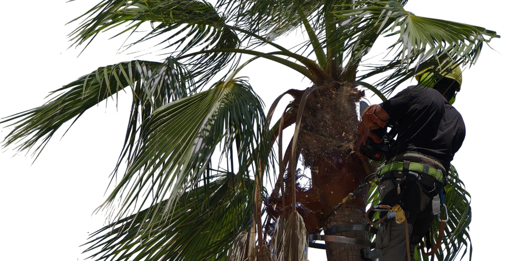

Inspección
Analizamos el estado de la palmera y planificamos la intervención.

Realizamos trabajos profesionales de poda y mantenimiento de palmeras para particulares, comunidades de vecinos, empresas y administraciones.
En Turia Jardín somos especialistas en la poda y mantenimiento de palmeras.
La poda adecuada es fundamental para la salud, la estética y la seguridad de las palmeras. Un mantenimiento regular permite eliminar hojas secas o deterioradas que, además de restar belleza al ejemplar, pueden convertirse en un peligro al desprenderse. También favorece el crecimiento saludable de nuevas hojas y previene la aparición de plagas y enfermedades que suelen alojarse en el follaje seco.
En Turia Jardín conocemos a fondo las especies de palmeras más comunes en Valencia (como la Washingtonia, la Phoenix canariensis o la Chamaerops humilis) y aplicamos técnicas de poda respetuosas con el crecimiento natural de cada variedad. Nuestro objetivo es que tus palmeras luzcan espléndidas durante todo el año, sin riesgos para las personas ni para las propias plantas.
Además, una poda profesional realizada en el momento adecuado ayuda a que la palmera concentre sus nutrientes en las partes sanas, lo que se traduce en un desarrollo más vigoroso y una mayor resistencia frente a condiciones climáticas adversas, como el viento o las heladas.

Trabajamos con equipos adecuados y medidas de seguridad.
Más de 10 años de experiencia en poda de palmeras.
Retiramos todos los restos y dejamos la zona impecable.
Presupuesto sin compromiso y asesoramiento profesional.
Analizamos el estado de la palmera y planificamos la intervención.
Realizamos la poda con técnicas profesionales y seguras.

Eliminamos hojas secas y restos de la poda.
Palmera sana, estética y segura.
Limpieza y mantenimiento en altura.
Retirada de hojas secas.
Intervención completa.